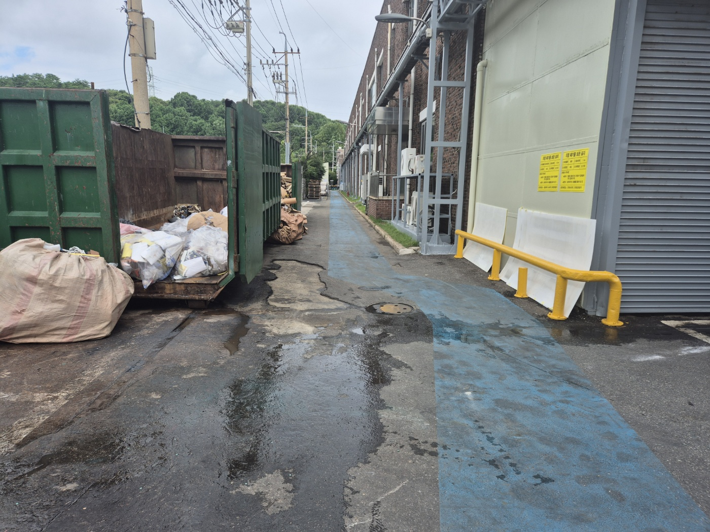
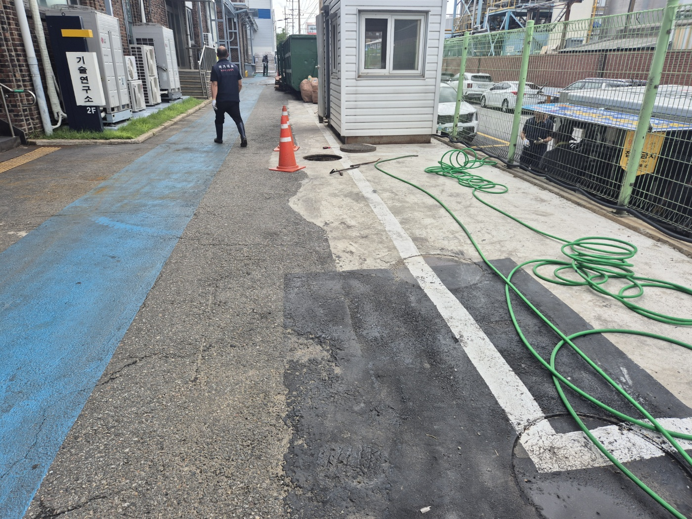
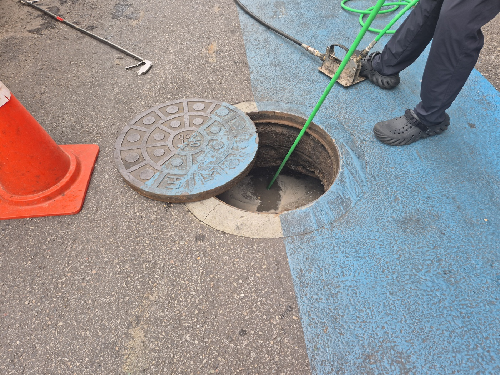
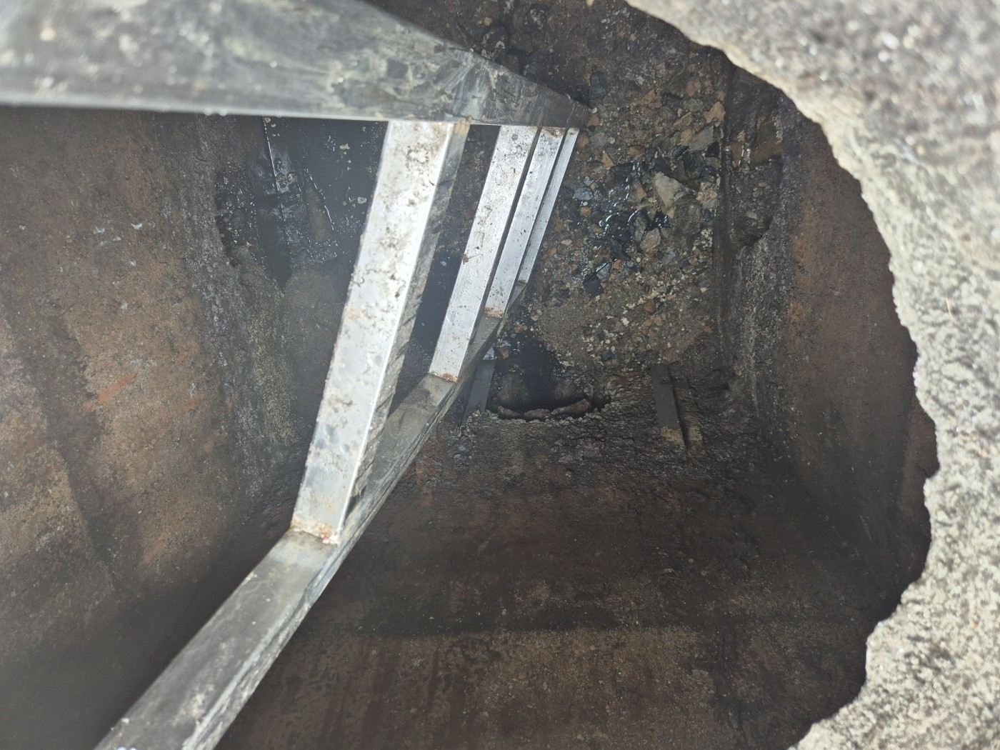
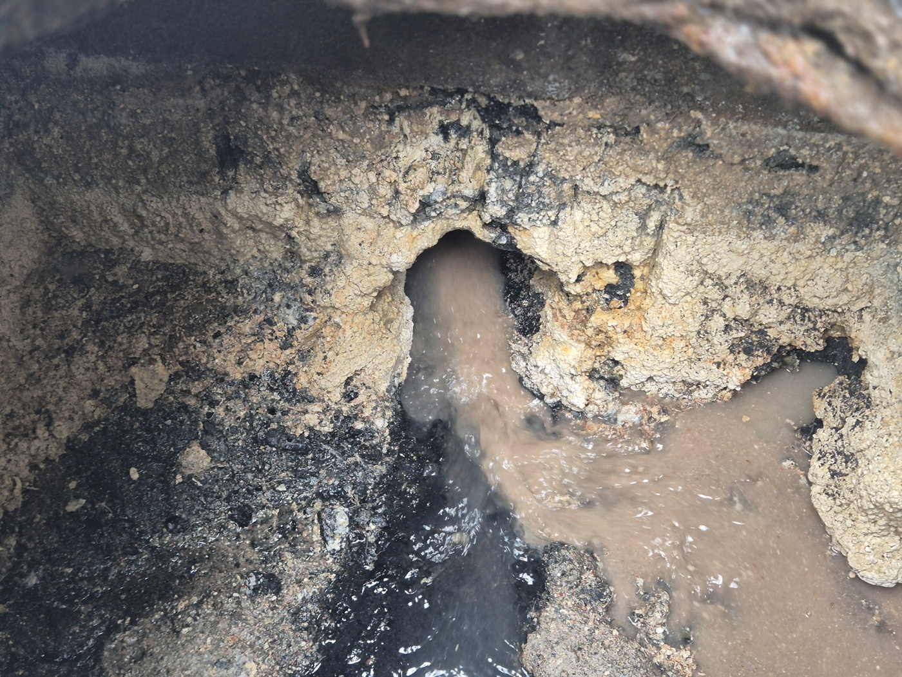
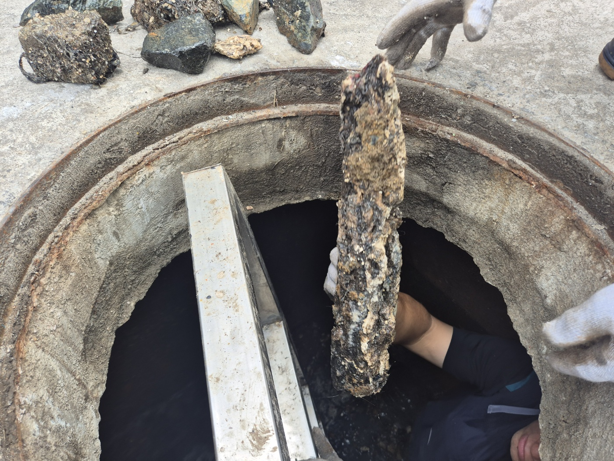
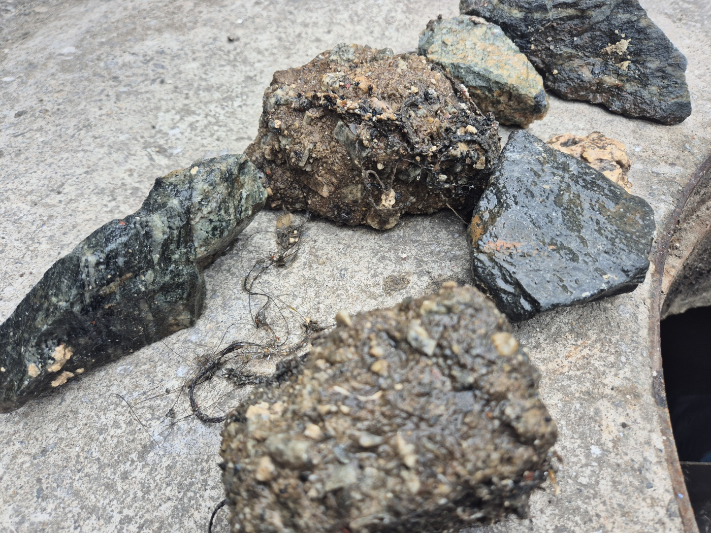
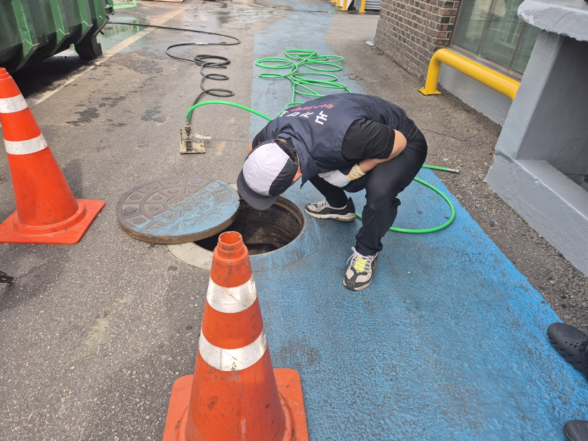
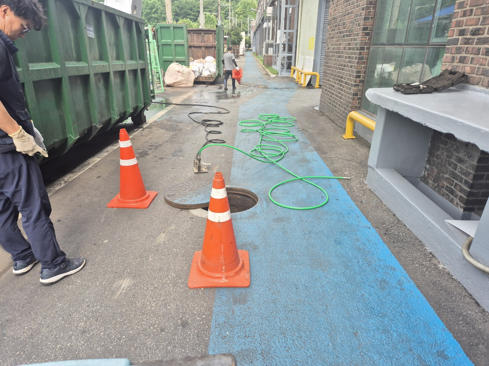
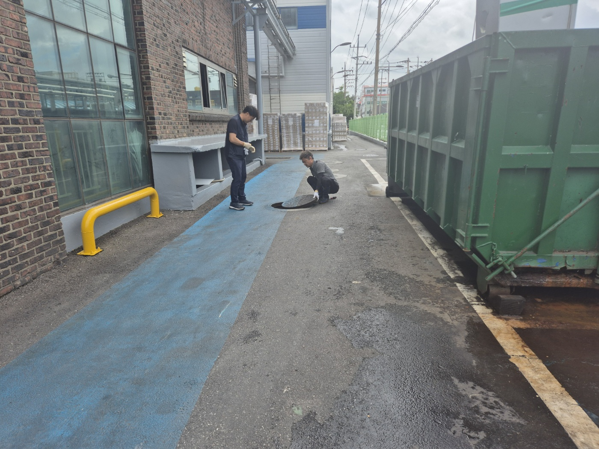

안녕하세요.. 고고고 설비입니다.. 오늘은 평택시 청북읍에 있는 회사 건물에서 하수구막힘 신고를 받고 다녀온 현장입니다. 건물 뒤편 통로에 물이 고여있는 게 눈에 딱 보일 정도였어요.
기술연구소 건물과 창고 사이 좁은 통로였는데, 바닥에 물이 계속 고여있는 상태였습니다.. 비 오는 날도 아닌데 바닥이 이렇게 젖어있는 걸 보니 하수구 쪽 문제가 확실해 보였어요. 차량에서 고압호스와 장비를 끌고 와서 통로를 따라 쭉 펼쳐뒀습니다.

안전콘부터 세워두고 맨홀 뚜껑을 열었습니다. 뚜껑을 열자마자 안쪽이 심상치 않다는 느낌이 들었어요.

사다리를 넣고 직접 맨홀 안으로 내려가서 상태를 확인했습니다.. 벽면 전체에 두껍게 눌어붙은 스케일이 가득했고, 바닥 쪽도 시커멓게 막혀있는 게 보였어요. 좁은 통로라 몸을 완전히 숙이고 들어가야 했고, 안쪽 공기도 탁해서 오래 머물기는 힘든 상태였습니다.

안쪽 배관 입구를 찾아보니, 원래 사람 손이 다 들어갈 정도로 넓어야 할 구멍이 두꺼운 스케일 때문에 손가락 하나 겨우 들어갈 정도로 좁아져 있었습니다..

손으로 뜯어낼 수 있는 부분부터 하나씩 떼어내기 시작했는데, 사람 팔뚝만 한 스케일 덩어리가 통째로 뽑혀 나왔습니다.. 이 정도로 두껍게 굳어있는 경우는 저희도 오랜만이었어요. 한 번에 안 떨어져서 조금씩 흔들어가며 힘을 줘야 했고, 떼어낼 때마다 안쪽 물길이 조금씩 넓어지는 게 눈으로 보일 정도였습니다.

뽑아낸 덩어리를 바닥에 늘어놓고 보니, 안에 머리카락이랑 각종 이물질이 그대로 굳어 있는 게 보이더라고요. 크기도 제각각이라 몇 개는 손으로 들기에도 묵직했습니다.

큰 덩어리를 걷어낸 뒤엔 고압호스를 배관 안으로 밀어 넣고 남은 찌꺼기까지 구간을 나눠 반복해서 세척했습니다. 두꺼운 스케일이 있던 자리라 한 번으로는 안 될 것 같아서, 압력을 올려가며 몇 차례 더 왕복시켰어요.

작업을 마치고 물을 흘려보내며 배수 상태를 확인했습니다. 처음보다 확실히 잘 빠지는 걸 확인하고 나서야 다들 안도했어요.. 맨홀 뚜껑을 다시 덮고, 뽑아냈던 스케일 조각들도 따로 치우고 정리했습니다.


이 정도로 두꺼운 스케일이 쌓이기까지는 시간이 꽤 걸린 만큼, 정기적으로 배관 내부를 점검해주셔야 이런 일이 반복되지 않습니다.
고고고 설비는 주택, 아파트, 원룸, 상가, 공장의 생활 하수 오수 배관을 관리해 주는 업체입니다. 고고고 설비에 전화 주시면 친절상담 정확한 진단 확실한 해결로 보답해 드리겠습니다!!